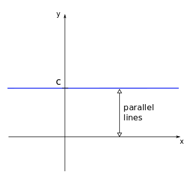
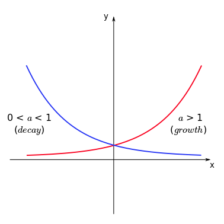
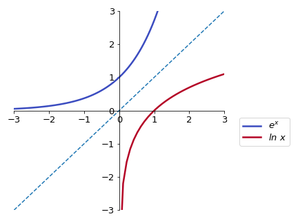

Lecture 01 - Making mathematical statements¶
Polynomial functions¶
One of the simplest elemntary functions is given by:
where \(n\) is a non-negative integer, and the coefficients \(a_n\), \(a_{n-1}\), …, \(a_0\). The highest value of \(n\) (for which the coefficient \(a_n\) is different from \(0\)) defines the degree of the polynomial.
Examples
\(f(x) = 3x^5 + 12x^4 - 6x^3 - x^2 + x - 16\) (Polynomial function of degree 5)
\(g(x) = \frac{3}{4}x^2 - \frac{\pi}{2} \) (Polynomial function of degree 2)
\(h(x) = 1.6x^8 - 0.576x^4 + 1.89x^2 - 0.7\) (Polynomial function of degree 8)
Tip
When the domain of the polynomial function is not explicitly given, it is frequently assumed to be all real numbers, \({\rm I\!R}\).
Let us discuss three of the most common forms of polynomial functions with degrees \(0\), \(1\), and \(2\).
Degree 0¶
Polynomial functions of degree 0 assume the form:
where \(c\) is a real number. This function is graphically represented by:
Degree 1¶
Polynomial functions of degree 1 are also called linear functions and are given by:
where again \(m\) and \(b\) are real numbers (with \(m \ne 0\)).
The constants \(m\) and \(b\) are frequently referred to as slope and intercept. The intercept \(b\) shows where the function crosses the \(y\)-axis, while the slope \(m\) is related to the inclination of the function.
If we consider two arbitrary points, \((x_1,y_1)\) and \((x_2,y_2)\) on the line, their projections define two intervals on the \(y\) and \(x\) axes. These intervals have sizes \(\Delta y = y_2 - y_1\) and \(\Delta x = x_2 - x_1\) respectively.
The slope \(m\) will be given by the ratio between the changes in \(y\) and \(x\), for any chosen two points on the line. Thus:
Also note that the triangle defined by the sides \(\Delta y\), \(\Delta x\) and this fragment of the function line forms a right triangle. Thus, there is a relationship between the slope \(m\) and the angle \(\theta\) between the function line and the \(x\)-axis (or any horizontal line parallel to it) which is given by:
The sign of the slope \(m\) also determines if the function increases or decreases as a function of \(x\). We have:
The graph on the left show the functions \(y = mx\) (intercept \(b=0\)), for different values of \(m\) (see legend colours).
Note that positive values of \(m\) give increasing functions, while negative values of \(m\) return decreasing functions.
One can also ask what is the value of \(x\) where the function \(f(x)\) crosses de \(x\)-axis, or, in mathematical notation, what is \(x\ \mbox{so that}\ f(x) = 0\). This value of x is called a root of \(f\) and it can be obtained by:
Example
Consider the function \(y = -2x + 1\).
We have: \(m=-2\) and \(b=1\). The root of this function will be \(x = -\displaystyle\frac{b}{m} = -\displaystyle\frac{1}{(-2)} = \displaystyle\frac{1}{2}\).
Additionally, the function crosses the \(y\)-axis at the intercept \(b=1\).
Degree 2¶
Now we look at polynomial functions of degree 2, given by the general form:
the coefficients \(a\), \(b\), and \(c\) are real numbers (with \(a \ne 0\)). The graph of a polynomial function of degree 2 is a parabola and many of its properties can be readily known by analysing the coefficients.
Concavity¶
Concave up (positive concavity)
Concave down (negative concavity)
Intercept & Roots¶
For the function \(f(x) = ax^2 +bx + c\) the coefficient \(c\) represents the intercept, the point where the function curve crosses the \(y\)-axis.
The roots of the function \(f\) are the values of \(x\) for which \(ax^2 +bx + c = 0\), where the curve crosses the \(x\)-axis. A polynomial function of degree 2 has a maximum number of two real roots*, given by:
The expression inside the square root is important to characterise different properties of this function and receives the name of discriminant:
Depending on the value of the discriminant a quick conclusion can be reached regarding the roots of the function.
When \(\Delta > 0\) there are two real distinct roots for the polynomial function.
Examples
Consider the function \(y = 0.5 x^2 - x -1.5\). We have:
The roots will then be given by:
When \(\Delta = 0\) there are two real identical roots for the polynomial function.
Examples
Consider the function \(y = 0.5 x^2 - x -0.5\). We have:
The roots will then be given by:
When \(\Delta < 0\) there are no real roots for the polynomial function, since the square root of a negative number is not defined for real numbers.
Examples
The graph on the left corresponds to the function \(y = 0.5 x^2 - x + 0.5\). We see that the curve does not cross the \(x\)-axis at any point, showing there is no real root for this function.
Minimum/ maximum¶
Depending on the concavity of the parabola (up or down), there will be a point where the function assumes a minimum or a maximum value. This point is called the vertex of the parabola. This extreme point can be easily determined by the symmetry properties of the function curve.
The coordinate \((x_v,y_v)\) of the vertex is given by:
Tip
Since the parabola is symmetric in relation to a vertical line passing through the vertex, the \(x\) coordinate of the vertex is given by the middle point between the two roots \(x_v = (x_1 + x_2)/2\). The \(y\) coordinate is then given by substituting \(x_v\) in the general form of the polynomial of degree 2, as \(y_v = f(x_v) = ax_v^2 + bx_v + c\). Try to obtain the expressions above as an exercise.
Now watch this video for a short introduction to complex numbers.
Rational functions¶
Rational functions are defined as quotients of polynomial functions:
The plot on the left shows the graph for the function \(y = \displaystyle\frac{2x-5}{x-3}\).
Note that the graph approaches a vertical line at \(x=3\) when \(x\) is close to \(3\), and it approaches a horizontal line at \(y=2\) when \(x\) approaches large values (positive or negative). These lines are called vertical asymptote and horizontal asymptote, respectively.
Vertical asymptotes appear for the values of \(x\) corresponding to the roots of the denominator function (\(q(x)\)) of the rational function \(f(x)\), while horizontal asymptotes to the limits of the function \(f(x)\) (if it exists) for large \(x\)*.
Asymptotes give us a lot of information about the limiting behaviours of the function, and they are especially relevant when modelling biological phenomena.
Power functions¶
Another type of function used in many applications are power functions (sometimes also called power laws). These functions have the functional form:
where \(C\) and \(\alpha\) are real constants (with \(C \ne 0\)).
The plot on the left shows the graphs for the functions \(y = x^{\alpha}\) (with \(C=1\)) for different values of the exponent \(\alpha\) (see the legend colours).
There are a few interesting aspects to note in this plot. First, the graphs were presented only for positive values of \(x\). Some of these functions are also defined (on the set of real numbers) for negative values of \(x\) which could be presented on the plot. This is the case for \(x^{2}\) or \(x^{-2}\), but not the case for \(x^{1/2}\) or \(x^{-1/2}\).
When analysing positive values of \(x\) (as it is frequently the case for models in Biology), for \(C > 0\), the exponent \(\alpha\) determines the behaviour of the functions, with increasing functions of x for \(\alpha > 0\) and decreasing functions of x for \(\alpha < 0\).
Watch this video about additional properties of power law functions.
Exponential functions¶
Similar to power functions, but with very different properties are the exponential functions:
where \(a\) is a positive constant. The parameter \(a\) is called base and the variable \(x\) is the exponent (remember that for power functions, the variable \(x\) is the base, raised to the power of the parameter \(\alpha\)).
Exponential functions are used to model many different real-world applications, from bacterial growth to radioactive decay.
Example
Suppose we start a bacterial colony with a single individual on a Petri dish. At each time step, counted as an average reproduction interval, each individual bacterium duplicates, originating two other individuals. The number of bacteria in the colony as a function of time, \(N(t)\), can be counted as:
\(t\) |
\(N(t)\) |
|---|---|
\(0\) |
\(1\ (= 2^0)\) |
\(1\) |
\(2\ (= 2^1)\) |
\(2\) |
\(4\ (= 2^2)\) |
\(3\) |
\(8\ (= 2^3)\) |
\(4\) |
\(16\ (= 2^4)\) |
\(5\) |
\(32\ (= 2^5)\) |
If no limitation (on space or resources) is imposed to the colony, the number of bacteria at each time step \(t\) can be well modelled by an exponential function of the form:
Exponential functions of the form \(f(x) = a^x\) (with \(a>0\)) can never assume negative values and their behaviour depends on the value of \(a\).
Tip
Note that the function increases with \(x\) if \(a>1\) (growth) and decreases with \(x\) if \(0<a<1\) (decay). To remember this, one can directly apply the properties of exponentiation. If \(f(x) = (1/3)^x\) (thus \(a = (1/3) < 1\)), we have:
and since \(3^x\) is an increasing function of \(x\), then \(1/3^x\) should be a decreasing function of \(x\) (as the denominator increases, the fraction decreases).
Two of the most used bases are \(a=10\) and \(a=e\), where \(e=2.71828\) (called Euler’s number or Napier’s constant). Exponential functions with \(a=e\) are commonly written as:
Another common representation of the exponential function is:
where \(\lambda\) is a real constant, usually called rate constant. The absolute value of the parameter \(\lambda\) controls how fast is the growth (in case \(\lambda > 0\)) or the decay (for \(\lambda < 0\)) of the function \(f(x)\) for increasing values of \(x\).
For a fixed value of \(x\), which \(\lambda\) corresponds to the highest and the lowest values among these exponential functions? Does it change if \(x\) is positive or negative? How would it change if, instead of \(a=e\), it was a different base \(a<1\)?
Logarithmic function¶
Let us start this section by understanding what the expression
actually means. One possible way to read it is: “\(\mbox{log}_a b\) is the number with which I have to exponentiate the base \(a\) so that I find the number \(b\). Since “\(\mbox{log}_a b = x\), the above expression is equivalent to:
The expression \(\mbox{log}_a b\) is called the logarithm of b in the base a and it is also possible to define a logarithmic function given by:
where \(a\) is the base of the logarithm and it is assumed \(a>0\) and \(a \ne 1\).
By defining a function like this, for each \(x\) we will have a number \(y = f(x)\) for which \(a^y = x\). Therefore, the logarithmic function is only defined for \(x>0\). Like the exponential function, the behaviour of the logarithmic function for increasing \(x\) will depend on the value of the base \(a\).
Note that the logarithmic functions are increasing if \(a>1\) and decreasing if \(0<a<1\). For a fixed value of \(x\) the functions showing the highest and lowest values \(f(x)\) will depend both on the value of the base and on which interval \(x\) belongs to (\(0<x<1\) or \(x>1\)). Can you determine these values for each case?
Tip
The similarities between the graphs for exponential and logarithmic functions are not coincidental. In fact, the graph for a logarithmic function with base \(a\) can be obtained by drawing the graph for an exponential function with base \(a\) and reflecting it in relation to the line \(y = x\). [MAKE COMMENT ON INVERSE FUNCTIONS]
(here we use the common nomenclature \(\mbox{log}_e x = \mbox{ln}\ x\)).